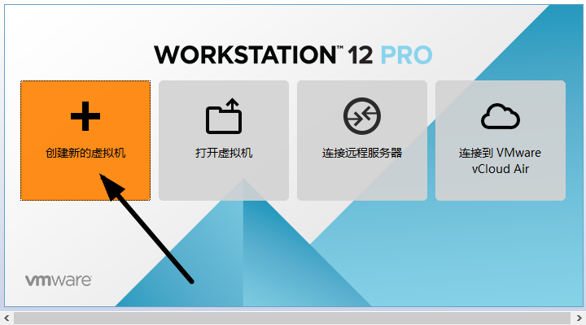
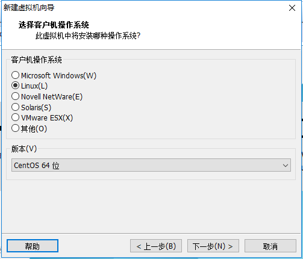
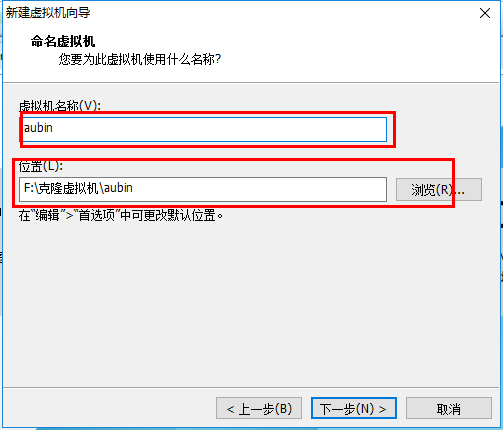
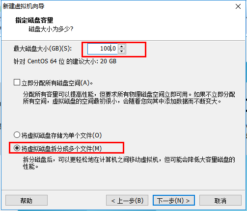
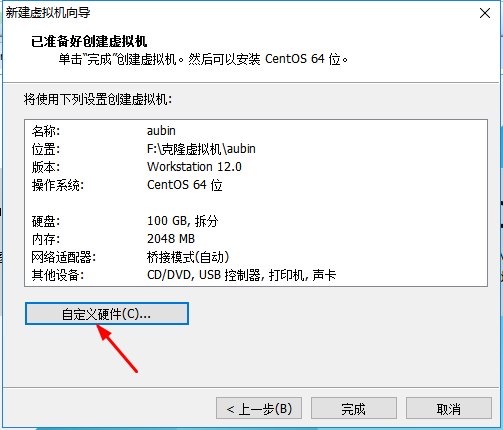
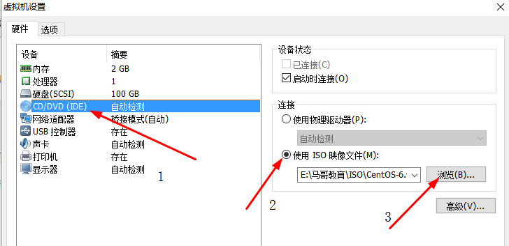
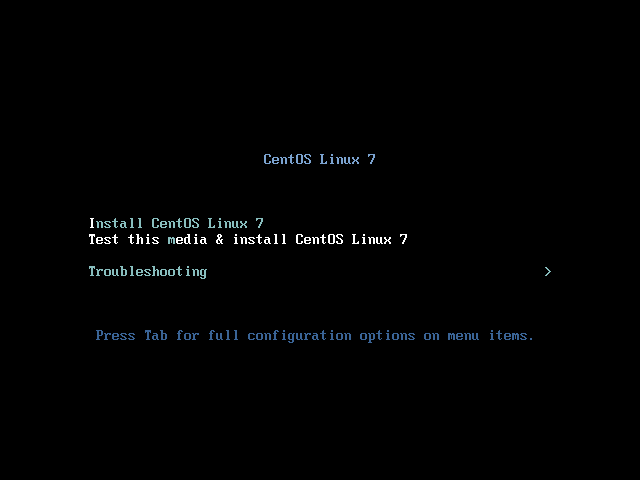

1. Preparación de software y hardware
Software: se recomienda usar VMware, yo uso VMware 12
Imagen: CentOS6, si no tienes la imagen puedes descargarla en Alibaba Cloudhttps://mirrors.aliyun.com/centos/

Hardware: debido a que se ejecuta el software de virtualización en el host para instalar CentOS, hay ciertos requisitos para la configuración del host. Como mínimo CPU i5 de doble núcleo, disco duro de 500G y memoria superior a 4G.

2. Preparación de la máquina virtual
1. Abrir VMware y seleccionar Nueva máquina virtual

2. Instalación típica e instalación personalizada
Instalación típica: VMware aplica las configuraciones comunes al sistema operativo de la máquina virtual, es muy amigable para principiantes.
Instalación personalizada: la instalación personalizada puede reforzar algunos recursos específicos y eliminar los innecesarios, evitando el desperdicio de recursos.
Aquí elijo la instalación personalizada.

3. Selección de compatibilidad de la máquina virtual
Aquí hay que prestar atención a la compatibilidad. Si una máquina virtual creada con VMware 12 se copia a VM11, 10 o versiones inferiores, puede haber incompatibilidad. Si una máquina virtual creada con VMware 10 se abre en VMware 12, no habrá problemas de compatibilidad.

4. Seleccionar "Instalar el sistema operativo más tarde"

5. Selección del sistema operativo
Aquí se selecciona el sistema operativo a instalar después; una elección correcta hará que vm tools tenga mejor compatibilidad. Aquí se elige CentOS bajo Linux.

6. Ubicación y nombre de la máquina virtual
El nombre de la máquina virtual es solo un nombre, facilita encontrarlas cuando hay muchas máquinas virtuales.
La ubicación predeterminada de VMware está en la unidad C; aquí la cambio a la unidad F.

7. Asignación de procesador y memoria
La asignación del procesador debe basarse en las necesidades reales. Si la CPU no es suficiente durante el uso, se puede aumentar más tarde. Esta vez solo se hace una demostración de instalación de CentOS, así que el procesador y los núcleos se seleccionan como 1.

La memoria también debe asignarse según las necesidades reales. La memoria de mi host es de 8G, así que asigno 2G de memoria a la máquina virtual.

8. Selección del tipo de conexión de red. Los tipos de conexión de red son cuatro: puente, NAT, solo anfitrión y sin red.
Puente: si se elige el modo puente, la máquina virtual y el host están al mismo nivel en la red, equivalente a estar conectados al mismo conmutador.
NAT: en modo NAT, la máquina virtual para conectarse a la red debe comunicarse con el exterior a través del host primero.
Solo anfitrión: la máquina virtual se conecta directamente con el host.
Proceso de acceso a Internet en modo puente y NAT, como se muestra en la siguiente figura.

Diferencia entre puente y NAT.
Aquí se elige el modo puente.

9. Los otros dos elementos se pueden dejar con las opciones predeterminadas de la máquina virtual.

10. Capacidad del disco
Asigne temporalmente 100G de capacidad de disco; se puede aumentar en cualquier momento más adelante. No marque "asignar todo el disco inmediatamente", de lo contrario la máquina virtual asignará los 100G directamente a CentOS y reducirá el espacio restante del disco del host. Marque "dividir el disco virtual en varios archivos" para que sea fácil copiar y duplicar la máquina virtual con dispositivos de almacenamiento.

11. Nombre del disco, se puede dejar por defecto.

12. Quitar el hardware innecesario.
Haga clic en Personalizar hardware.

Seleccione hardware innecesario como tarjeta de sonido, impresora, etc. y luego elimínelo.

13. Haga clic en Finalizar; la máquina virtual ya está creada.

3. Instalación de CentOS
1. Conectar el CD/DVD.
Haga clic derecho en la máquina virtual recién creada y seleccione Configuración.

Primero seleccione CD/DVD, luego elija "Usar archivo de imagen ISO", y finalmente haga clic en Examinar para encontrar el archivo de imagen descargado. Asegúrese de marcar "Conectar al encender" y luego haga clic en Aceptar.

2. Encender la máquina virtual.

3. Instalar el sistema operativo.
Después de encender la máquina virtual, aparecerá la siguiente pantalla:
- Install CentOS 7 Instalar CentOS 7
- Test this media & install CentOS 7 Probar el archivo de instalación e instalar CentOS 7
- Troubleshooting Solucionar problemas
Seleccione la primera opción, Instalar CentOS 7 directamente, presione Enter y entre en la siguiente pantalla.

Seleccione el idioma a usar durante la instalación; aquí se elige inglés y el teclado estadounidense. Haga clic en Continue.

Primero configure la hora.

Seleccione la zona horaria de Shanghai y verifique si la hora es correcta. Luego haga clic en Done.

Seleccione el software a instalar.

Seleccione Server with Gui y luego haga clic en Done.

Seleccione el destino de instalación; aquí se puede particionar el disco.

Seleccione "I will configure partitioning" (Configuraré las particiones) y luego haga clic en Done.

Como se muestra en la figura, haga clic en el signo más, seleccione /boot, asigne 200M a la partición boot. Finalmente haga clic en Add.

Luego, de la misma manera, asigne espacio a las otras tres particiones y haga clic en Done.

Luego aparecerá un resumen de información; haga clic en Accept Changes (Aceptar cambios).

Configure el nombre de host y la información de la tarjeta de red.

Primero active la tarjeta de red, luego verifique si se puede obtener una dirección IP (en mi caso es puente), después cambie el nombre de host y haga clic en Done.

Finalmente seleccione Begin Installation (Comenzar instalación).

Configure la contraseña de root.

Después de configurar la contraseña de root, haga clic en Done.

Haga clic en USER CREATION para crear un usuario administrador.

Ingrese nombre de usuario y contraseña, luego haga clic en Done.

Espere a que el sistema termine de instalarse y reinicie el sistema.

Autor: Aubin
Enlace: https://www.jianshu.com/p/ce08cdbc4ddb
Fuente: Jianshu